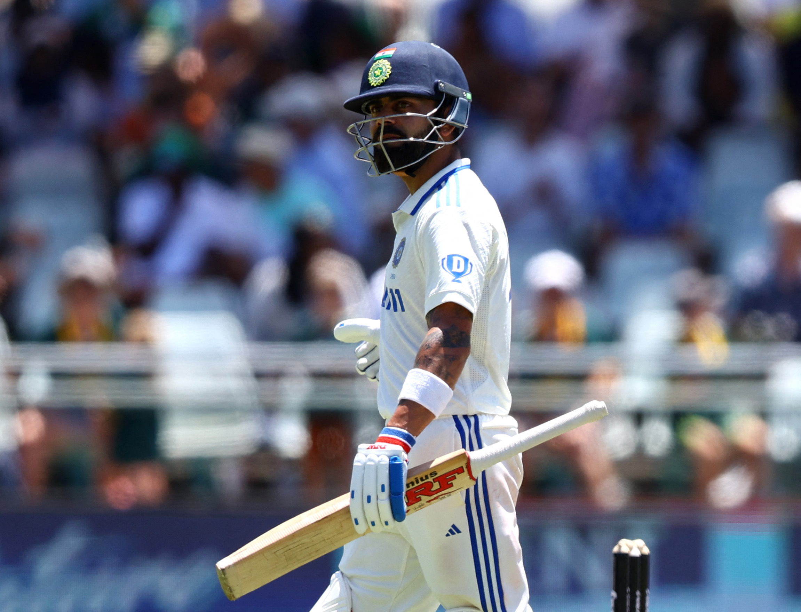

Madan Lal, the legendary World Cup-winning all-rounder, has requested Virat Kohli to take back his retirement from Test cricket. Virat Kohli has been sent an SOS by a former Indian legendary World Cup-winning all-rounder, urging him to relinquish retirement and make a comeback to Test cricket.Virat Kohli posted a cryptic tweet on Thursday, just three days before he makes his first appearance for the Indian team in seven months.brz Both Kohli and Rohit Sharma will be representing India for the first time since they played a central role in helping the Men in Blue win the ICC Champions Trophy, the latter as captain. It will also be their first appearance in international cricket since Rohit and Kohli announced their retirement from Test cricket within a few days of one another in May – less than a year after they bid Twenty20 Internationals goodbye.